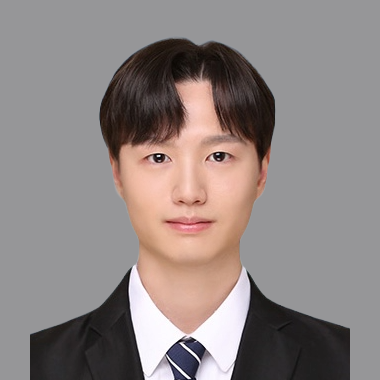

생성 AI 제작 파이프라인 · 캐릭터 일관성
2024.07 — 2025.12


[인턴] 광고 영상 제작 콘텐츠 마케터 지원About
AI로 빠르게 만들고, 반응으로 고르고, 통한 방식은 팀에 남깁니다.
AI가 채울 빈칸을 줄일수록
결과가 흔들리지 않는다
복잡한 동작은 구간으로 나누고 시작·끝 프레임을 명시했습니다. 텍스트로 전달하기 어려운 캐릭터의 정체성은 레퍼런스 이미지로 넘기고, 캐릭터·배경·표정·헤어·라이팅으로 역할을 나눠 충돌 시 우선순위를 정했습니다. 첫 샘플에서 동작과 표정이 무너진 뒤 세운 원칙입니다.
훅은 취향이 아니라
반응으로 고른다
보기에 잘 된 시안과 사람들이 고른 시안은 달랐습니다. 흑백요리사가 유행할 때 메인 포스터 패러디가 이길 거라 봤지만 투표와 A/B 모두 다른 밈이 높았습니다. 그 뒤로 소재는 지금 돌려 보는 장면에서 출발했고, 주간 회의에서 화제성과 제작 가능성을 함께 보고 정했습니다.
한 번 통한 방식은
팀이 반복할 수 있을 때 변화가 된다
프롬프트를 즉흥으로 고치는 방식 자체가 병목이라고 봤습니다. 레퍼런스 템플릿으로 기준을 맞추자 작업자마다 캐릭터가 달라지는 문제가 줄었고, 썸네일도 통한 구성을 인수인계 문서로 남겨 이후 제작자들이 같은 원칙으로 작업하고 있습니다. 개인 노하우로 두면 한 번의 성공이고, 문서로 남기면 팀의 제작 방식이 됩니다.
Experience
Work


외부활동